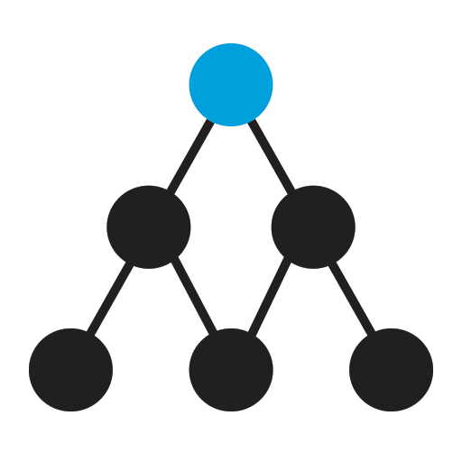

Self designed algorithm for discovering all the nodes in a distributed computing network environment. Designed in a such a way that the new nodes, failed nodes and the recovered nodes can be identified using a message complexity of O (log N). Where N is the total number of nodes in the environment. Implemented this algorithm using the SCTP in C++.
Tejas Pattabhi
Hi!
I'm Tejas
Tejas Pattabhi
Application Developer and DevOps
Background
I entered the field of Computer Science when I joined P. E. S. School of Engineering, Bangalore (Now called as P. E. S. I. T. Bangalore South Campus) in 2008 to pursue my Engineering in Information Science and Technology. Upon graduation, I started my career as a Young Graduate at Societe Generale Global Solution Center, Bangalore, India carrying out the responsibilities of a Windows Server Administrator. Here, I was a part of solving the issues faced by Windows Servers in real-time, worked on Virtual machines than Physical Machines, Experienced myself with PowerShell, PowerCli, vSphere and its CLI.
After working there for an year, I proceeded with my education. Migrated to The United States of America and started with my Master's program in the field of Computer Science at Erik Johnsson School of Engineering, University of Texas at Dallas. I chose to pursue my M. S. in the Traditional Track, which emphasizes on the low level computing of Operating Systems, System Design, Algorithms and Compilers. While studying, I did an internship at TradeStation Technologies for eight months where my title was Software Developer Intern. Here, I got to learn the real world working of data management, storage, online trading and data analysis using Amazon Web Services and had a huge exposure towards Cloud Computing.
In my last semester of MS, I interned as a Student Volunteer from UTD at Award Solutions where I worked on OpenStack and it's applications. Developed an application which could monitor a number of clusters/ Virtual Machines/ Tenants on a web-page. This was a part of my coursework. I completed my Master's degree in August 2015. I have been a part (lead) of several major projects developed at UTD. Please check my git profile for more information on my work and projects.
From September 2015, was working as a Software Engineer at Webroot in San Diego, California. Since February 2019, have been working as a Sr. Software Engineer.
" The more you SWEAT in PRACTICE, the LESS you BLEED in WAR "
— Subhash Chandra Bose
" dictionary is the only place where success comes before work "
— Harvey Specter (Suits)
" World is a great gymnasium. We've come here to make ourselves strong "
— Swami Vivekananda
Experience
Software Engineer
Webroot Inc.
San Diego, CA
September 2015 - CurrentStudent Volunteer Intern - OpenStack
Award Solutions
Richardson, TX
May 2015 - August 2015Software Developer - Intern
TradeStation Technologies
Richardson, TX
May 2014 - December 2014Windows Server Administrator
Societe Generale - Global Solution Centre
Bangalore, KA, India
August 2012 - August 2013Education
Masters in Computer Science
Graduate Coursework
Algorithms
Web Programming Languages
Database Design
Big Data Management

Distributed Computing - Operating Systems
Semantic Web
Advanced Programming Languages
Telecommunication Network Management
Object Oriented Analysis & Design
Advanced Computer Networks
Erik Johnsson School of Engineering, University of Texas at Dallas
August 2013 - August 2015Bachelor of Engineering in Information Science
P. E. S. Institute of Technology, Bangalore South Campus (VTU)
August 2008 - August 2012Implementing Delaunay Triangles and Bezier Curves to Identify Suitable Business Locations in the Presence of Obstacles
Authors
Tejas Pattabhi, Arti Arya, Pradyumna N, Swati Singh, Sukanya D
Abstract
Data mining plays an important role in collecting information to make businesses more competitive in present business world. It is seen that the location of any business outlet is a major factor of its success. Establishing different business enterprises include a detail study of localities, people's income status living in those areas, and many other non-spatial factors. This paper is one such idea to suggest those locations for entrepreneurs, based on which they can decide on the where they can setup their business outlet. The proposed algorithm makes use of Delaunay triangulation for capturing spatial proximity and Bezier curves are used to model obstacles. The algorithm is implemented as Web application, which accepts the name of a place and collects data, form clusters and show the feasible locations of the service specified, considering the geographic irregularities and man-made obstructions. In this algorithm, spatial and non-spatial data related to a location are collected and the spatial clustering algorithm is initiated which works based on the obtained data. Clusters are formed based on the unique characteristics of each location. The experimental results are conducted on many different locations of India and in this paper results are shown for three places namely, Mysuru, Patna and Mumbai. The results have shown expected and exciting results.
Citation
Tejas Pattabhi, Arti Arya, Pradyumna N, Swati Singh, Sukanya D,"Implementing Delaunay Triangles and Bezier Curves to Identify Suitable Business Locations in the Presence of Obstacles", IJITCS, vol.5, no.3, pp.29-39, 2013.DOI: 10.5815/ijitcs.2013.03.04
Link to the publication
http://www.mecs-press.org/ijitcs/ijitcs-v5-n3/IJITCS-V5-N3-4.pdfProjects
Samples of my work: https://www.bitbucket.org/tejaspattabhi
Academic & Personal projects
Dynamic Node Discovery in a Distributed Computing Environment
Link to Source Code: https://bitbucket.org/tejaspattabhi/distributed-node-discovery-algorithm
A graph based web tool to identify the important business locations in a town
Developed a web based tool to locate the best places for a specific type of business in any city across the globe. It works on spatial and non-spatial data mining algorithms, gathers live data from various datasets of google, wiki and some licensed dedicated governoment sources. Using the mathematical structures like Bezier Curves and Delaunay triangles, a data mining algorithm is designed to tackle this problem. This entire project was developed using PHP, JQuery and JavaScript.
Link to the project: http://www.mecs-press.org/ijitcs/ijitcs-v5-n3/v5n3-4.html
Network Simulation and DVMRP protocol implementation
Simulated the working of a network in the real world where a network node could be initialized and triggered as a UNIX process. Communication between the processes (network nodes) was seen as IPC methods (network links). Implemented the Distance Vector Multicast Routing Protocol. The entire project was implemented in C
Link to Source Code: https://bitbucket.org/tejaspattabhi/dvmrp
Implementation of Roucairol & Carvalho's Mutex Algorithm in Distributed Computing
Implemented the Roucairol and Carvalho's Mutual Exclusion Algorithm in a distributed systems environment. Transformed the algorithm with a Key-based approach, where the nodes shared Keys instead of traditional "permissions" to obtain locks. The entire project was coded in C++.
Link to Source Code: https://bitbucket.org/tejaspattabhi/roicairol-carvalho-mutex-algorithm
Implementation of a replicated file system in a Distributed System environment using the dynamic voting protocol
In a distributed computing environment, maintaining a file system is challenging. This project was implemented using the Voting Protocol principle, where the file systems are updated dynamically using the lock-based-systems. This multi threaded application was developed in g++491 environment.
Link to Source Code: https://bitbucket.org/tejaspattabhi/dynamic-voting-algorithm-in-distributed-systems/overview
Time Table for Schools
Implemented a randomized Time Table generation algorithm which would generate schedules for classes, professors and laboratories. Languages Used: PHP for server end scripting, HTML, Javascript and CSS.
Person Tracker
Person Tracker is an application used to track the locations travelled by a user for a given calendar day. This application is developed by making use of Call Detail Record (CDR) data set, which gives us information about the location (latitude and longitude), call duration, date and time of calls received by a user with their respective user id (encrypted).
Link to Source Code: https://bitbucket.org/tejaspattabhi/person-tracker
MapReduce Design and Work Samples
Random designs and Java Programs coded to run in MapReduce Framework.
Link to Source Code: https://bitbucket.org/tejaspattabhi/mapreduce-examples
Professional Projects
Award Solutions
Alarm Counter Web: Built an app that can run on a Linux Server VM & respond to web-hooks executed on every state transition of a VM in the Alarm Counter. Designed a web page to consolidate all tenant monitors graphically. Information gathered – Ceilometer.
Our Work is seen here: http://cs.utdallas.edu/opensourcecourse/
TradeStation Technologies
IISLogAnalysis: Implemented MapReduce Algorithm to analyze IIS logs from PROD servers on a daily basis using the AWS Elastic MapReduce (EMR) & generate JSON files with information on number of requests and response codes for different intervals of time.
D3 Web Application: Using the Data Driven Documents (D3) framework, developed web pages & hosted them on an EC2 instance which would consume JSON files and generate a graphical view of data like heat maps, scatter charts to analyze network traffic.
TradeStation IISLogAnalysis Plugin: Constructed a plugin which makes the MapReduce algorithm to consume IIS logs (input) & store JSON (output) in an S3 bucket. It also fed the D3 Web Apps with JSON files directly from the S3 buckets.
Societe Generale Global Solution Centre
Health Check of VMs Automation: Developed a script to extract the status of every server of Societe Generale clients on all the ESXi present two data centers.
Server Construction, Maintenance and Decommission (Virtual): Investigated challenging cases of unreachable servers, network failures and backup issues. Participated in Disaster Recovery drills.
HP c7000 Blade servers and asset management: Set up the iLO with the provided configuration and up-gradation of c7000 BL460c servers of HP on regular basis. Individually handled iLO and Firmware up-gradation of 706 servers.
Virtual Asset Management: Individually installed and configured ESXi and clusters to host VMs.
Software Engineer at Webroot Inc.
Contact meContact Me
- 11336 Camino Playa Cancun #3, San Diego, CA - 92124
- +1 (469) 570 1988
- tejas.pattabhi@gmail.com